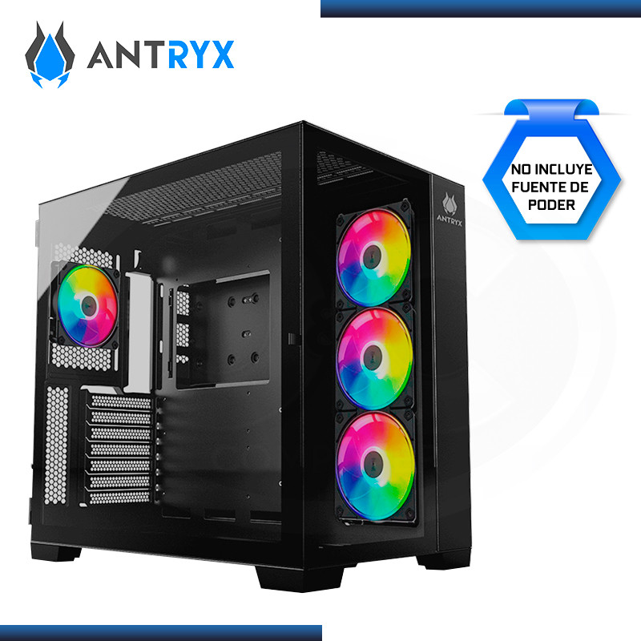
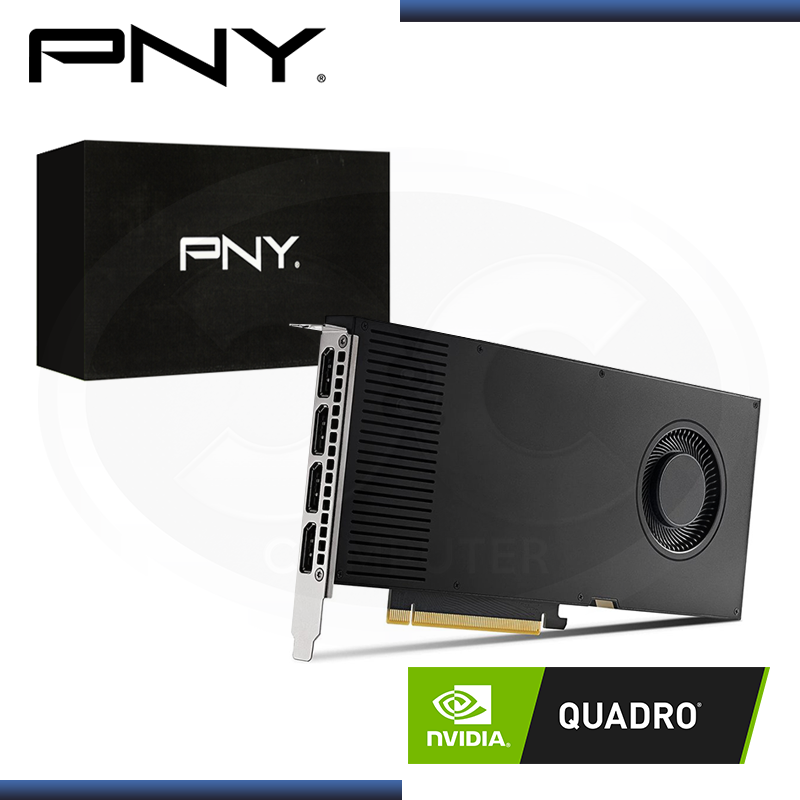
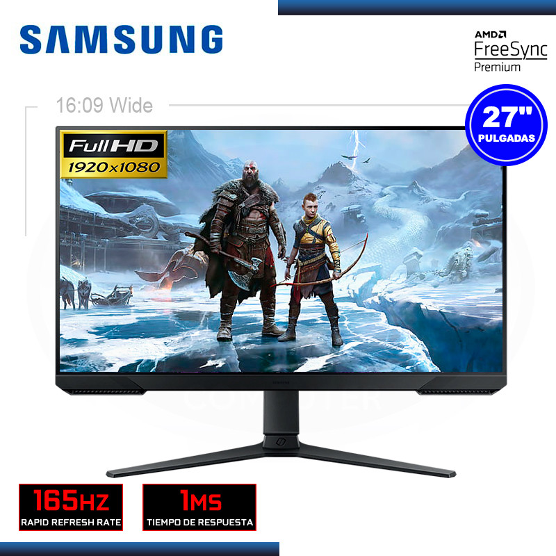
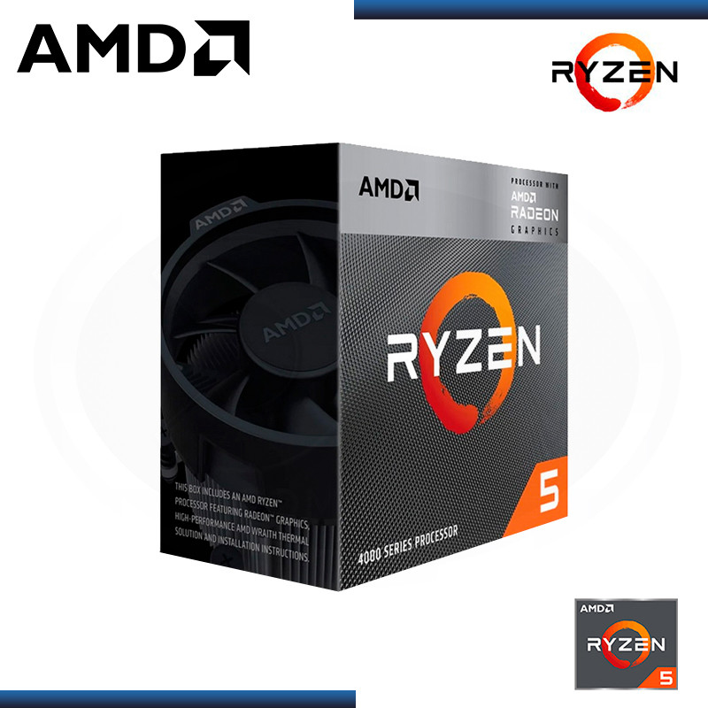

|  | Case de computadoraMODELO : CASE ANTRYX FX 900 BLACK ARGB SIN FUENTE VIDRIO TEMPLADO USB 3.0 MARCA : ANTRYX ESPECIFICACIONES TECNICAS DIMENSIONES : 446mm x 285mm x 430mm TIPO : Placa base ATX, M-ATX, ITX PANEL : Frontal y lateral de vidrio templado PUERTOS : USB 3.0 Tipo C x 1, USB 3.0 x 2, micrófono + audio HD x 1 |
 | Tarjeta de video NvidiaPRODUCTO : PNY NVIDIA QUADRO RTX A4000 16GB GDDR6 256BITS MARCA : PNY ESPECIFICACIONES TECNICAS CUDA CORES : 6144 MEMORIA GPU : GDDR6 de 16GB INTERFAZ : 256 BITS SISTEMA : PCI Express 4.0 x16 |
|  | Monitor SamsungMARCA : SAMSUNG MODELO : MONITOR LED 27" SAMSUNG LS27AG320NLXPE 1920x1080 FHD ESPECIFICACIONES TECNICAS PANTALLA : Tamaño (pulg,) : 27" Resolución Máxima : 1920x1080 Ratio de Aspecto : 16:09 Velocidad de Respuesta : 1ms Frecuencia Actualizacion : 165Hz Ángulo de Visión : 178º(H), 178º(V) |
 | Procesador RyzenPRODUCTO : PROCESADOR AMD RYZEN 5 4600G 3.7GHz/4.2GHz 8MB 6CORE AM4 MARCA : AMD RYZEN ESPECIFICACIONES TECNICAS NÚCLEOS CPU : 6 RELOJ BASE : 3.7GHz RELOJ AUMENTO : 4.2GHz TDP : 45-65W |